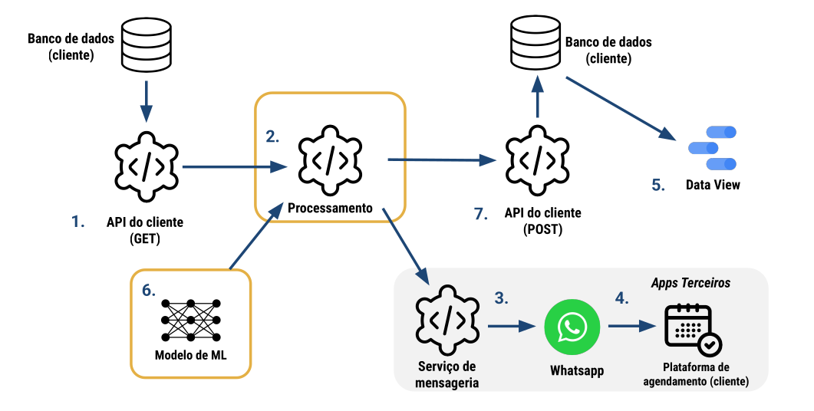
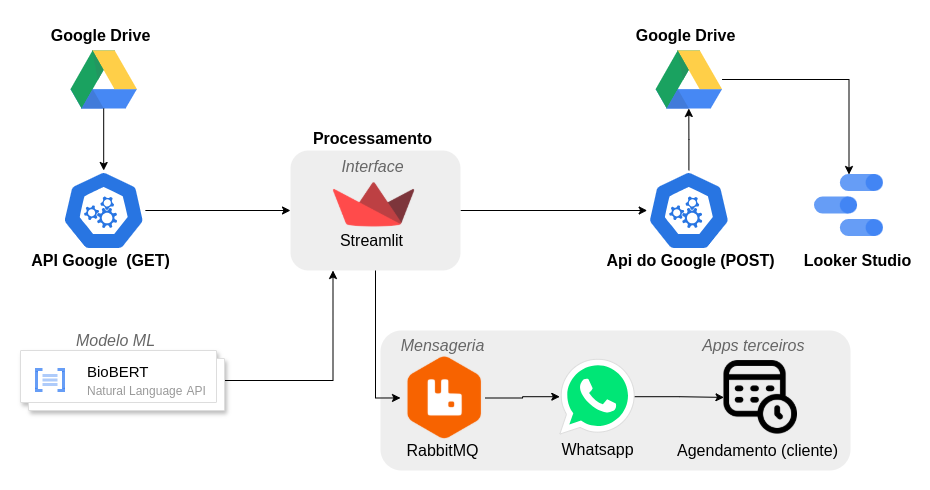

Documento de Arquitetura
1. Introdução
1.1 Propósito
- Aumento da taxa de conversão: Facilitando o agendamento de exames.
- Otimização do uso de recursos: Eficiência no processamento e envio das mensagens.
- Fortalecimento do relacionamento com pacientes: Comunicação mais eficiente e personalizada.
1.2 Escopo
2. Representação Arquitetural
2.1 Definições
2.2 Justificativa
3. Detalhamento
 Figura 1 - Diagrama de referência arquitetural
Elementos do modelo no presente sistema:
1 - Entrada de dados: API do Google para buscar dados das planilhas na Web
2 - Processamento: Componente Interface
3 - Serviço de Mensageria: utilizando RabbitMQ
4 - Interface de Agendamento: Fora do escopo
5 - Visualização de dados: Looker Studio e StreamLit
6 - Modelo de Machine Learning: BioBERT
7 - Saída de dados: API do Google para inserir/atualizar dados das planilhas na Web
Portanto o diagrama de arquitetura fica no seguinte formato:  Figura 2 - Diagrama de Arquitetura
4. Metas e Restrições Arquiteturais
4.1 Metas Arquiteturais
4.1.1 Implatação
4.1.2 Segurança de dados
4.1.3 Eficiência e Manutunibilidade:
4.2 Restrições Arquiteturais
4.2.1 Compatibilidade com navegadores
Justificativa: É importante garantir o acesso a diferentes formatos de dispostivos, impedindo que haja barreiras e limites tecnológicos.
4.2.2 Armazenamento de dados
Justificativa: Aproveitar a infraestrutura já disponível e escalável do Google Drive.
4.2.3 Visualização gráfica de dados
A visualização de dados será realizada através do Streamlit para exibição de tabelas e do Looker Studio para gráficos interativos e relatórios.
Justificativa: Essas ferramentas oferecem flexibilidade e são ideais para análise de dados em tempo real e visualização de grandes volumes de dados.
5. Visão Lógica
Interface
Objetivo: Oferecer uma interface simples e direta para que o usuário visualize tabelas, dashboards e interaja com o sistema utilizando o Streamlit. Essa camada é responsável por gerenciar as entradas do usuário, validar os dados e orquestrar as chamadas aos módulos de processamento e serviços de backend.
Principais Funcionalidades:
-
Renderização da Interface:
user_interface.py: Implementa a interface principal usando Streamlit, permitindo a visualização de dados e a interação com o sistema.
-
Autenticação de Usuários:
authenticator.py: Gerencia a autenticação, garantindo acesso seguro e restrito conforme as políticas definidas.
-
Envio de Mensagens:
message_sender.pyeui_send_message.py: Responsáveis pelo disparo de mensagens, integrando a camada de interface com os serviços(componente Services) e processamento de dados(componente Models).
-
Processamento de Dados:
processor.py,structured_processor.pyeno_structured_processor.py: Executa o processamento de dados, aplicando os devidos filtros e analises dos dados estruturados e não estruturados.
-
Integração com Planilhas:
update_sheet.py: Atualiza as planilhas da web.
Models
Objetivo: Fornecer a lógica de Machine Learning (ML) e processamento de dados para analisar e classificar os clientes como aptos ou não a receberem mensagens.
Principais Funcionalidades:
-
Classificação de Exames:
exam_classifier.py: Analisa exames identificando padrões e possíveis anomalias nos dados e classifica a relação do exames com imagens.
-
Verificação de Imagens:
img_exam_checker.py: Processa os textos identificando palavras chaves que tornam o exame do cliente de acordo com as regras de negócio.
-
Limpeza e Pré-processamento de Texto:
text_cleaner.py: Sanitiza os dados textuais, preparando-os para análises subsequentes do modelo de ML.
Services
Objetivo: Oferecer conexões e integrações com APIs externas e serviços de mensageria, como Google Sheets para armazenamento e visualização de dados e RabbitMQ para comunicação assíncrona. Essa camada atua como intermediária na comunicação entre o sistema e o mundo externo, garantindo a troca de informações de forma robusta e escalável.
Principais Funcionalidades:
-
Consumo de Mensagens:
consumer.py: Consome as mensagens da fila de mensageria do RabbitMQ.
-
Publicação de Mensagens:
publisher.py: Gerencia o envio de mensagens para a fila de mensageria do RabbitMQ.
-
Envio Direto de Mensagens:
send_message.py: Envia mensagem no Whatsapp do cliente apto a receber de acordo com as regras de negócio.
-
Integração com Google Sheets:
google_sheets.py: Faz a conexão com as APIs do Google (Google Drive e Google Sheet).

Figura 3 - Diagrama de Camadas
7. Visão de Implantação
7.1 Tecnologias e Justificativas
-
Python: Linguagem de programação back-end
- Justificativa: O Python é amplamente utilizado para tarefas de análise de dados devido às suas poderosas bibliotecas como pandas e streamlit. Sua simplicidade e facilidade de integração com modelos de Machine Learning (como o BioBERT) tornam-no uma escolha ideal para esse projeto.
-
RabbitMQ: Serviço de mensageria Open-Source sendo rodado no Docker
- Justificativa: RabbitMQ é uma solução robusta e confiável para mensageria, permitindo uma comunicação assíncrona eficiente entre os componentes do sistema. Sua simplicidade e flexibilidade são adequadas para o envio de mensagens para os usuários no WhatsApp.
-
Docker: Plataforma de containerização
- Justificativa: Docker é uma ferramenta crucial para garantir que o ambiente de desenvolvimento e produção sejam idênticos, isolando dependências e evitando problemas de configuração. Isso facilita o processo de implantação, bem como a manutenção e a escalabilidade do sistema.
Bibliotecas:
-
PyTorch: Biblioteca de Deep Learning e Machine Learning
- Justificativa: PyTorch é utilizado para executar o modelo BioBERT, uma rede neural pré-treinada para Processamento de Linguagem Natural (PLN). Sua flexibilidade e alto desempenho são essenciais para o processamento de dados médicos e a identificação de padrões, como a análise de receitas médicas.
-
re: Expressões regulares em Python
- Justificativa: A biblioteca
reé usada para realizar o pré-processamento de textos, removendo caracteres indesejados e outros elementos que podem interferir na análise de texto do BioBERT. Sua simplicidade e poder tornam-na ideal para a limpeza de dados textuais.
- Justificativa: A biblioteca
-
pandas: Biblioteca para manipulação de dados
- Justificativa: pandas é uma ferramenta fundamental para a manipulação e transformação de dados em DataFrames. Ela proporciona operações rápidas e eficientes de leitura, escrita e filtragem de dados.
-
Streamlit: Biblioteca Python open-source para desenvolvimento de aplicações web interativas
- Justificativa: Streamlit é uma biblioteca altamente versátil e fácil de usar para a criação interfaces(UI) de dados. Ela permite uma rápida prototipagem e customização das visualizações de dados, facilitando a interação dos usuários com as informações, sem necessidade de um front-end complexo.
-
gspread: Biblioteca Python para trabalhar com o Google Sheets
- Justificativa: gspread é a escolha para a integração com a API do Google Sheets, permitindo a leitura, escrita e atualização de planilhas de maneira simples. Sua utilização facilita a manipulação de dados armazenados no Google Drive, essencial para o fluxo de informações no sistema.
Modelo de Machine Learning:
- BioBERT: Modelo de ML (Machine Learning)
- Justificativa: BioBERT é um modelo pré-treinado específico para Processamento de Linguagem Natural (PLN) na área biomédica. Ele é altamente eficaz para a análise de textos médicos, como receitas e exames, devido ao seu treinamento em grandes bases de dados biomédicos. Sua utilização permite a identificação precisa de padrões em textos, como a extração de informações relevantes, tornando-o ideal para esse projeto de análise de dados médicos e classificação de exames.
7.2 Estratégia de implantação
O sistema será implantado na web, utilizando um ambiente de produção em serviços cloud para garantir integração e autenticação com as APIs. A escolha recai sobre a Google Cloud Platform (GCP), pela sinergia com os serviços do Google Sheet e Google Drive.
Infraestrutura:
- Google Cloud Run:
Utilização do Cloud Run para hospedar tanto o sistema quanto o serviço de mensageria em contêineres separados, permitindo escalonamento automático e otimização de custos.
Exemplo: Para workloads de baixa demanda, o Cloud Run cobra apenas pelo tempo de execução (CPU e memória) e pelo tráfego de dados, tornando-o mais econômico que uma VM sempre ativa, fonte: https://cloud.google.com/run.
-
Benefícios de utilizar o Cloud Run:
-
Escalabilidade automática baseada na demanda.
- Menor custo para cargas de trabalho intermitentes.
- Deploy simplificado via comandos
gcloud. - Gerenciamento automático de certificados SSL e balanceamento de carga.
A orquestração dos contêineres será gerida diretamente pelo Cloud Run, dispensando a necessidade do Docker Compose no ambiente de produção.
8. Restrições Adicionais
Restrições de Negócios
Autenticação Obrigatória:
- Justificativa: A autenticação garante que somente usuários autorizados tenham acesso às informações sensíveis dos clientes.
Acesso Restrito a Perfis em Serviços da Google:
- Justificativa: A segmentação de funcionalidades por perfis de acesso melhora a segurança e organização do fluxo de trabalho.
Restrições de Qualidade
Usabilidade:
- Justificativa: Um design flexível facilita o uso do sistema por diferentes perfis de usuários com diferentes graus do conhecimento.
Portabilidade:
- Justificativa: Garantir o acesso em múltiplas plataformas facilita o uso por usuários em diferentes contextos e dispositivos.
Manutenibilidade:
- Justificativa: A capacidade de realizar manutenção eficiente é fundamental para garantir a evolução contínua do sistema e atender a novas demandas.
9. Melhorias e Riscos
Este documento descreveu a arquitetura atual adotada para resolver o problema, abordando tecnologias, lógica de implementação e outros aspectos relevantes. No entanto, algumas limitações e riscos foram identificados, os quais precisam ser considerados para melhorar a eficiência e robustez do sistema:
Riscos:
- Falta de testes: A ausência de uma cobertura de testes pode resultar em falhas não previstas no sistema, comprometendo sua estabilidade e a confiabilidade dos dados.
- Desempenho do modelo de ML (BioBERT): O modelo pré-treinado utilizado para análise de dados apresenta um desempenho subótimo, levando aproximadamente 10 minutos para processar cerca de 2.500 registros aleatórios. Esse tempo de processamento pode se tornar um gargalo à medida que o volume de dados cresce.
Melhorias Propostas:
- Implementação de testes: A introdução de testes unitários e de integração garantiria maior estabilidade e facilitaria a identificação de erros durante o desenvolvimento.
- Treinamento de modelo de ML específico: Substituir o modelo de ML pré-treinado por um modelo customizado e treinado especificamente para a tarefa de análise de receitas, melhorando a precisão e eficiência do processamento.
- Substituição das planilhas por um banco de dados robusto: Migrar o armazenamento de dados de planilhas para uma solução de banco de dados mais escalável e eficiente, como o Supabase, oferecendo maior confiabilidade e desempenho.
- Revisão da arquitetura e integração total no Streamlit: Consolidar a aplicação no Streamlit, integrando diretamente com as APIs do Google (Sheets e Drive), para melhorar a interação e facilitar o fluxo de dados, simplificando a gestão da aplicação.
Essas melhorias visam otimizar o desempenho do sistema, reduzir riscos operacionais e aumentar a escalabilidade para atender a futuros desafios.
10. Bibliografia
DOCKER. Documentação oficial do Docker. Disponível em: https://docs.docker.com/. Acesso em: 12 mar. 2025.
RABBITMQ. Documentação oficial do RabbitMQ. Disponível em: https://www.rabbitmq.com/docs. Acesso em: 12 mar. 2025.
RABBITMQ COM PYTHON. RabbitMQ com Python. Disponível em: https://youtu.be/6PHr1NwlQaU?si=Zn_N5KD4kkzUnwiJ.
HUGGING FACE. Hugging Face. Disponível em: https://huggingface.co/. Acesso em: 12 mar. 2025.
PYTHON. Documentação oficial do Python. Disponível em: https://docs.python.org/pt-br/. Acesso em: 12 mar. 2025.
STREAMLIT. Documentação oficial do Streamlit. Disponível em: https://docs.streamlit.io/. Acesso em: 12 mar. 2025.
YOUTUBE. Como usar as IAs do Hugging Face. Disponível em: https://www.youtube.com/watch?v=Vlv2GAGcPgI. Acesso em: 12 mar. 2025.
Tabela de Versionamento
Abaixo está o histórico de versões do documento presente:
| Versão | Data | Descrição |
|---|---|---|
| 1.0.0 | 11/03/2025 | Criação do documento. |